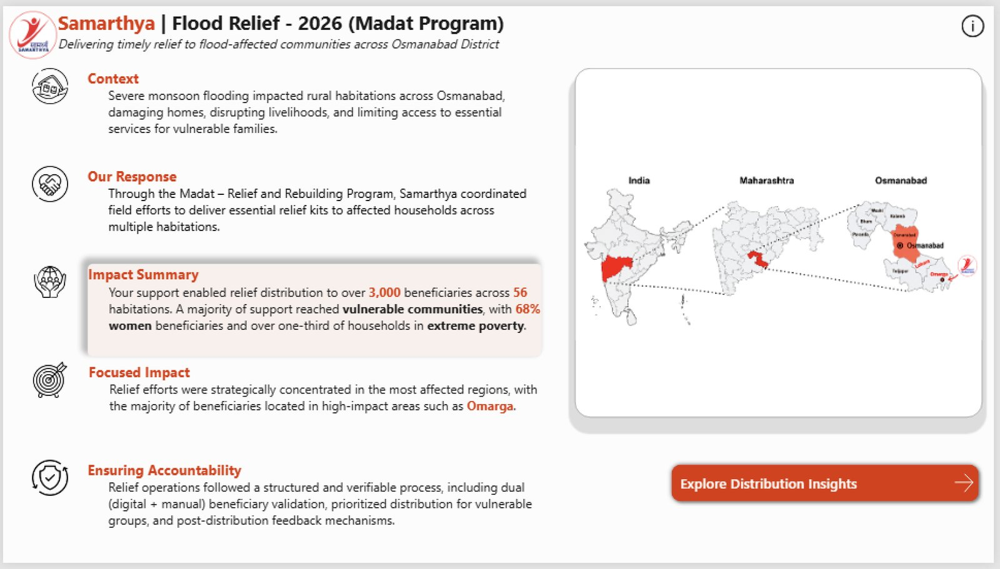
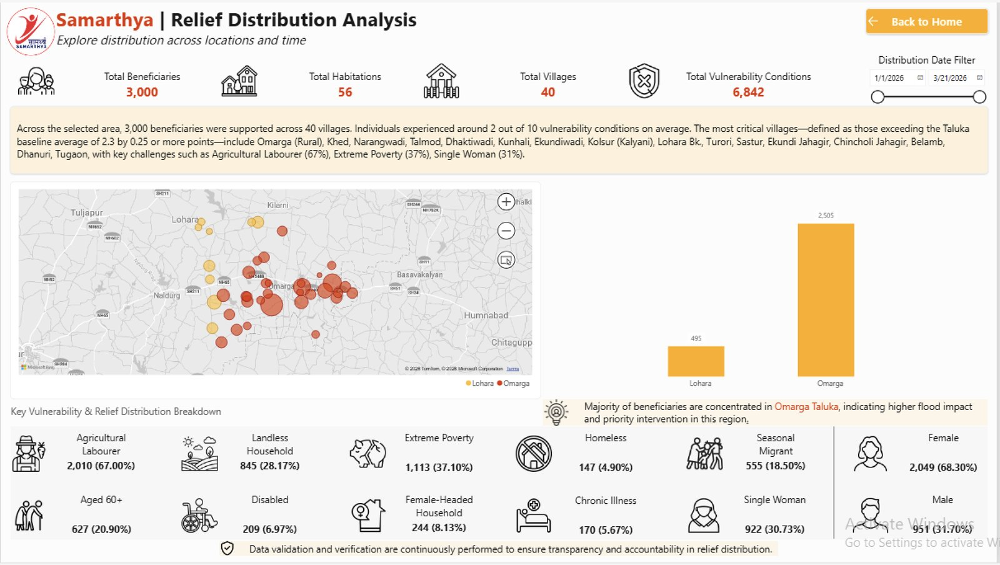
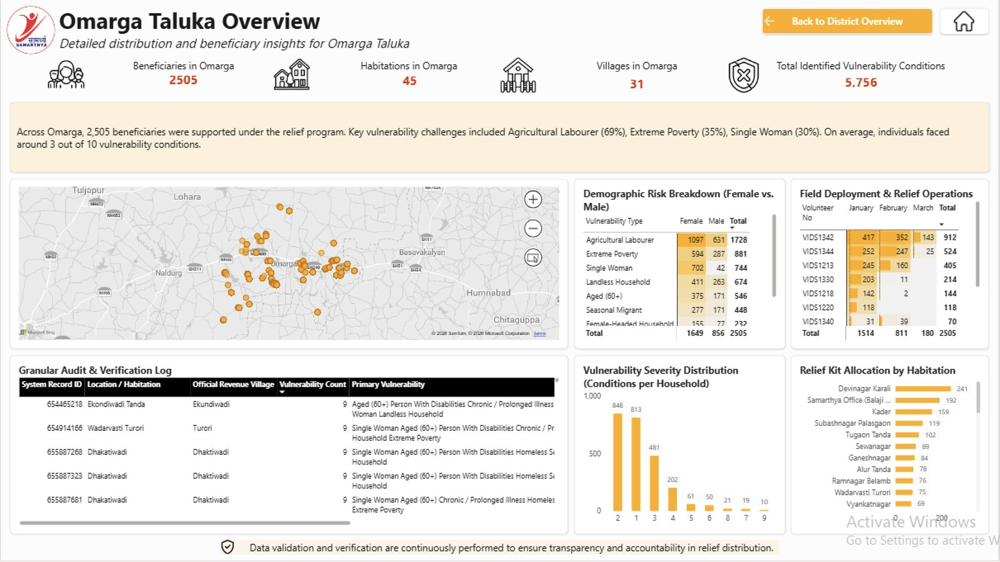
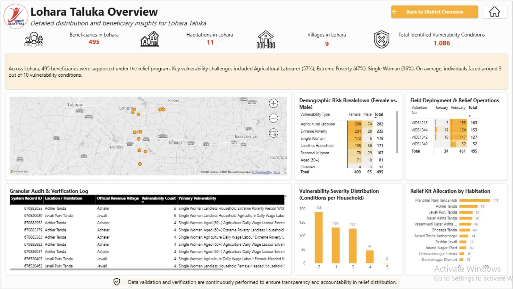
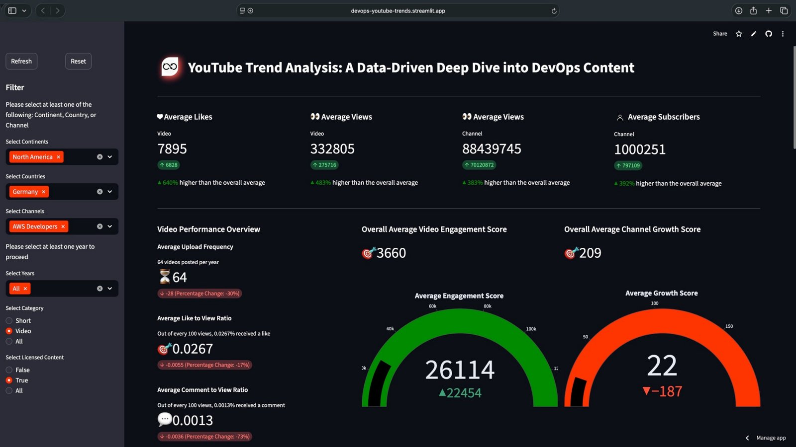
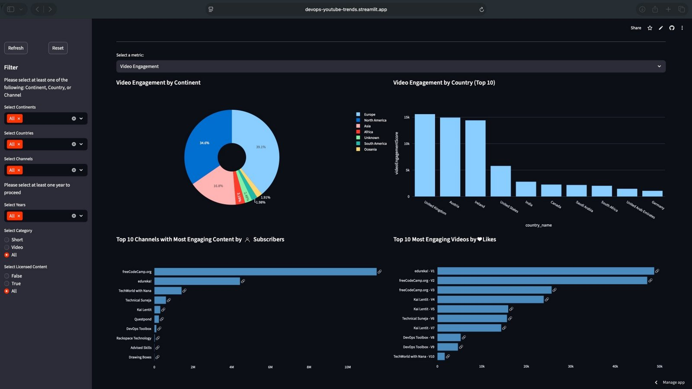

AWS Certified Cloud Practitioner
Amazon Web Services
Jan 2024
Data analyst with 2+ years across ETL testing, business intelligence, and analytics — turning inconsistent, real-world datasets into dashboards and decisions people can actually trust.
Two projects that show the same thing from different angles: taking data nobody fully trusted yet, and building the process — not just the chart — that makes it trustworthy.
An end-to-end Power BI platform built for Samarthya NGO to track relief distribution and vulnerability across 3,000 beneficiaries — from inconsistent field records to a star-schema model that leadership and donors could rely on.
Tools: Power BI · DAX · Power Query · Python · KoboToolbox API · Tabular Editor




"Working with Darshana on our Flood Relief 2026 project was exceptional. She built an advanced Power BI dashboard with GPS, photo, and signature validations to ensure transparency. Patient, friendly, and highly skilled — she delivered a clean, user-friendly tool while upholding beneficiary dignity."
An automated pipeline that pulls video metadata from the YouTube Data API for DevOps-focused channels, then surfaces engagement and growth trends through a filterable Streamlit dashboard — sliceable by continent, country, channel, category, and year.
Tools: Python · Streamlit · Pandas · Plotly · YouTube Data API
View the live dashboard

Everything here supports one goal: making sure the number on the dashboard is the same number that's actually true in the source data.
SQL, complex joins, CTEs, window functions, aggregations, data validation, data quality, ETL/ELT testing, Excel, XLOOKUP, VLOOKUP
Power BI, DAX, Power Query, M, star schema, data modeling, drill-through, dynamic tooltips, geospatial visualization, Tableau, Looker, Streamlit, Plotly
Python, Pandas, NumPy, Google Apps Script, JavaScript, REST APIs, API integration
MS SQL Server, PostgreSQL, KoboToolbox API, Google Drive, Google Sheets, YouTube Data API
Git, GitHub, Jira, Unix/Bash, Tabular Editor
AWS, object-level security, data privacy, data quality governance
Designed and maintain an end-to-end Power BI analytics platform tracking relief distribution and vulnerability across 3,000 beneficiaries, with governance controls built for donor accountability.
Validated data accuracy and pipeline integrity for a large-scale US healthcare ELT system, writing source-to-target reconciliation SQL and documenting 250+ execution observations.
Completed 8 end-to-end case studies spanning profitability, risk, hiring, and operations analytics using SQL, Python, Tableau, and Power BI.
I'm open to different ways of contributing — from freelance dashboard work to collaborations, volunteering, and practical projects with students or early-career teams.
I'm currently looking to take on selected free or low-cost dashboard projects for small businesses, NGOs, community initiatives, and organizations where better reporting can create real value. Pricing can be flexible — based on the organization's situation and ability to pay.
Let's use data to make a practical impact.Power BI dashboards, data cleaning, reporting, SQL analysis, KPI development, and business intelligence for real-world business needs.
Collaborate with analysts, developers, founders, researchers, or teams building practical data products and analytics projects.
Open to meaningful analytics work for NGOs, social-impact organizations, community initiatives, and causes where data can help.
Happy to collaborate on portfolio projects, dashboards, data analysis initiatives, and practical learning projects.
I'm open to data analyst and BI roles — remote or Coimbatore-based. Reach out directly, or connect on LinkedIn or GitHub.
Tell me what you're working on. No matter whether it's a paid project, collaboration, volunteer opportunity, or student project.